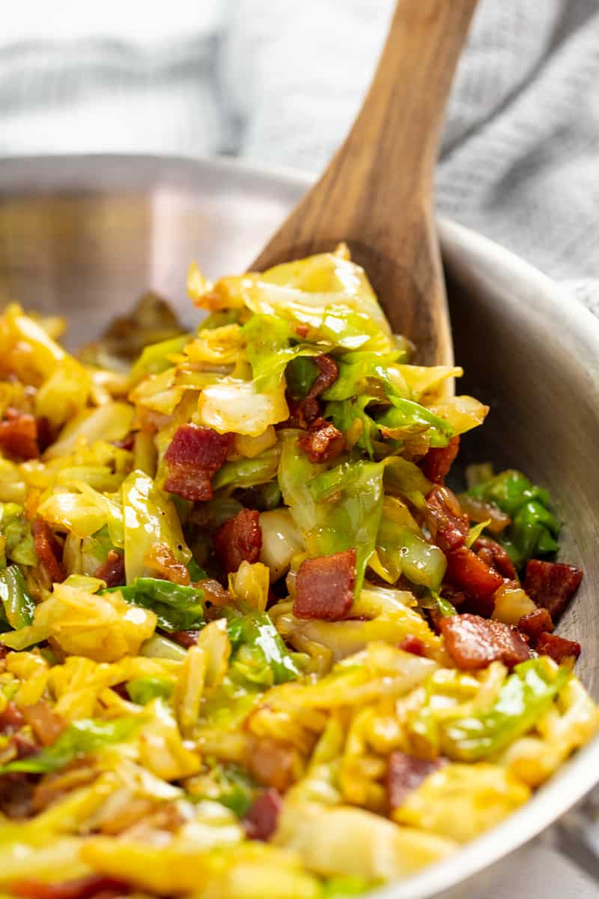

Fried Cabbage

Description:
It is an Irish side dish that is made by pan-frying cabbage with onions and basic spices and served predominantly with corned beef.
Ingredients:
-
shredded cabbage
-
salt
-
pepper
Steps:
-
Cook bacon in a non-stick pan over medium heat until crisp. Use a slotted spatula to remove the bacon and place it on plate. Do not discard the bacon grease and drippings!
-
In the same pan, add onion and cook until translucent.
-
Add cabbage, salt, pepper, paprika and mix everything together. Cook for about 7 minutes or until cabbage is tender.
-
Add bacon back into the pan and mix it together with the cabbage and serve warm.